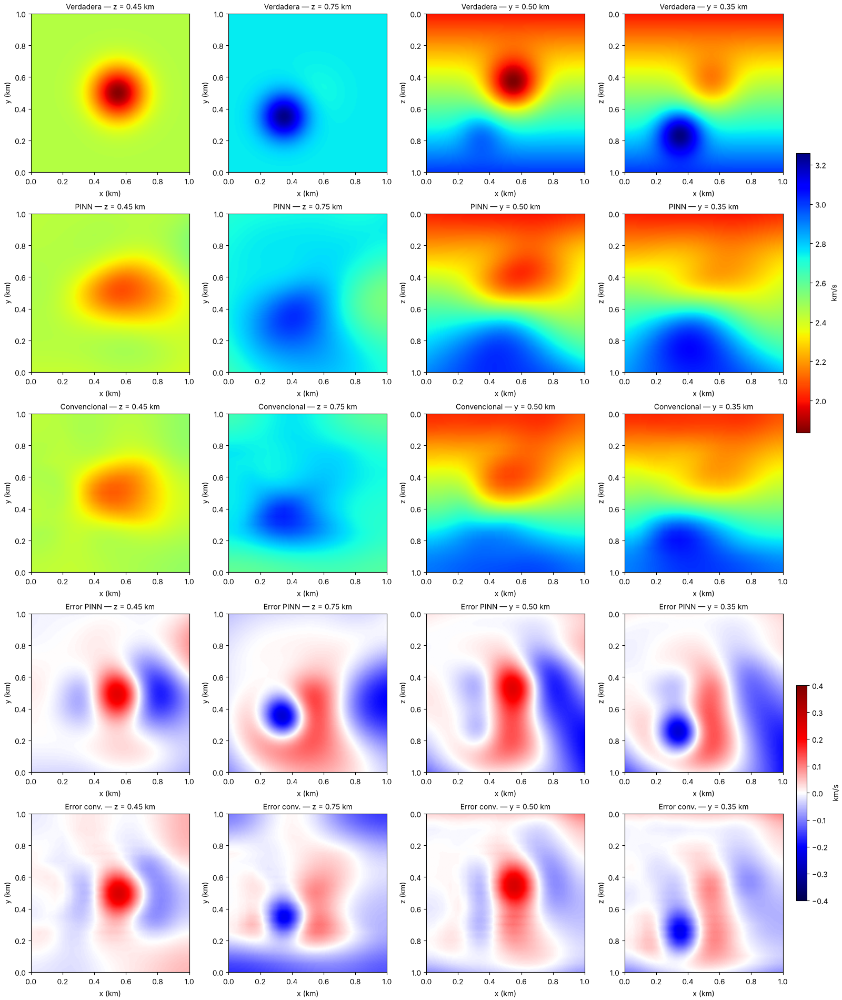
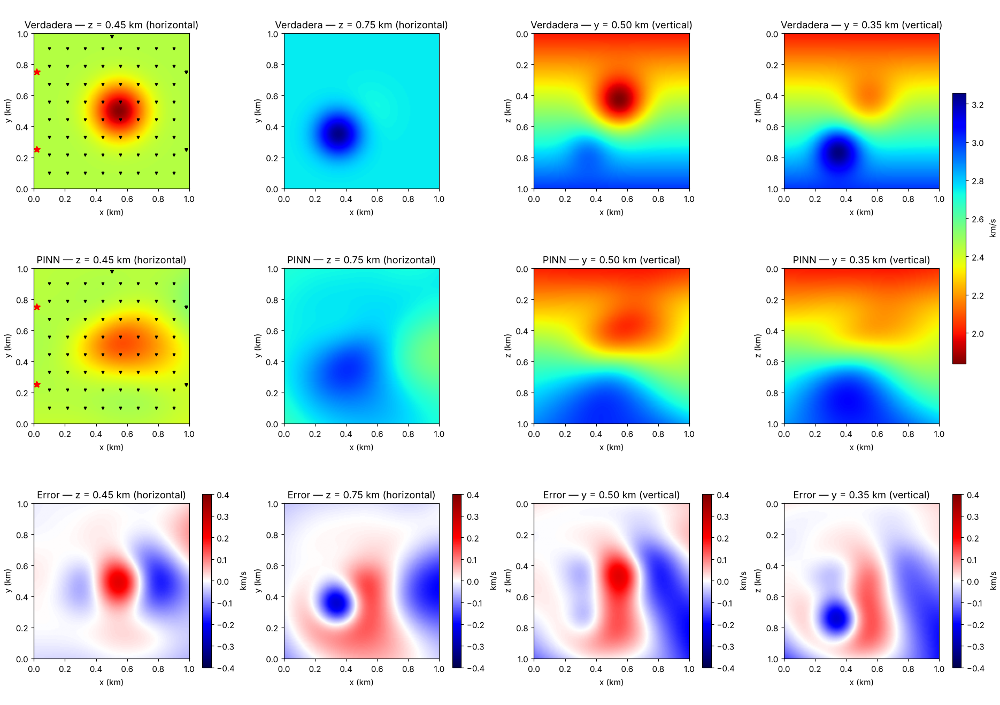
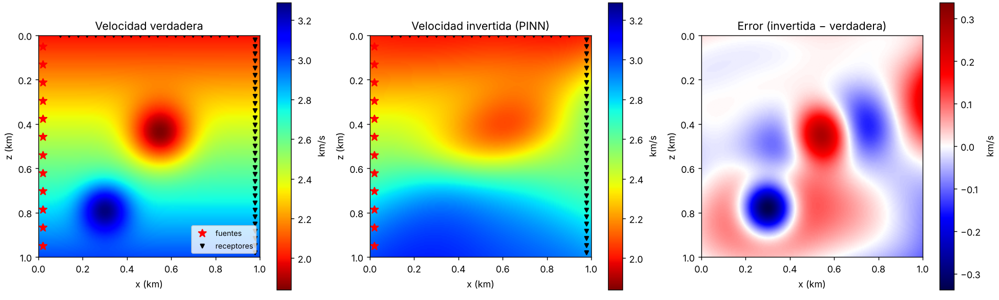

Tomografía sísmica con PINN
Inversión del modelo de velocidad a partir de tiempos de primera llegada con una
red neuronal informada por la física que resuelve la ecuación eikonal
|∇T| = 1/v. Experimento sintético 3D: cubo de 1 km³, 12 fuentes, 112 receptores,
1344 tiempos con 1 ms de ruido.
Bloque 3D interactivo
Arrastra para rotar, rueda para zoom y pasa el ratón para ver la velocidad. Corte en x = 0.30, y = 0.50, z = 0.75 km: la cara vertical atraviesa la anomalía lenta y el piso muestra la anomalía rápida. Abrir a pantalla completa.
Notebook Jupyter
El cuaderno Tomografía sísmica 3D con PINN explica y ejecuta todo el proceso paso a paso: física, datos, entrenamiento, cortes del modelo, validación con Fast Marching y bloque 3D. También puedes ver o descargar el archivo .ipynb para ejecutarlo en Jupyter o VS Code.
PINN vs. tomografía convencional
Los mismos datos invertidos con el método clásico de rayos curvos (inversión linealizada iterativa con suavizado; λ elegido con el principio de discrepancia, sin mirar el modelo verdadero).
| Métrica | 2D PINN | 2D conv. | 3D PINN | 3D conv. |
|---|---|---|---|---|
| RMS tiempos (ruido 1 ms) | 1.59 ms | 0.99 ms | 1.15 ms | 0.93 ms |
| Error relativo de velocidad | 2.86 % | 2.62 % | 1.99 % | 2.42 % |
| Anomalía lenta recuperada | 54 % | 60 % | 60 % | 57 % |
| Anomalía rápida recuperada | 32 % | 52 % | 51 % | 57 % |
| Tiempo de cálculo (CPU) | 150 s | 7 s | ~7 min | ~8 min |
En 2D la convencional gana en todo y es ~20× más rápida. En 3D el resultado es mixto: la PINN da el mejor modelo global y la convencional ajusta mejor los datos y las anomalías, con un coste similar.

Filas: verdadera, PINN, convencional, error PINN, error convencional. Ver la comparación 2D.

Cortes 3D

Versión 2D

Cómo funciona
Se usa la eikonal factorizada T = |x − xs| · τ y se entrenan dos redes a la vez:
τ(x, xs) para el tiempo de viaje y v(x) para la velocidad. La pérdida combina
el residuo de la ecuación en puntos aleatorios con el ajuste de los tiempos observados; no hace falta
trazado de rayos.
pip install -r requirements.txt python run_tomography_3d.py python plot_block_3d.py